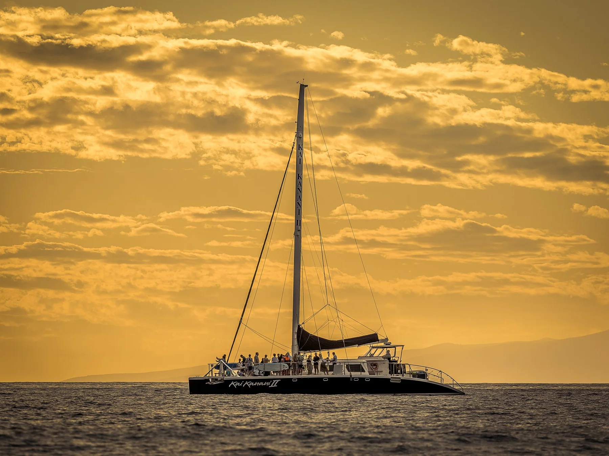
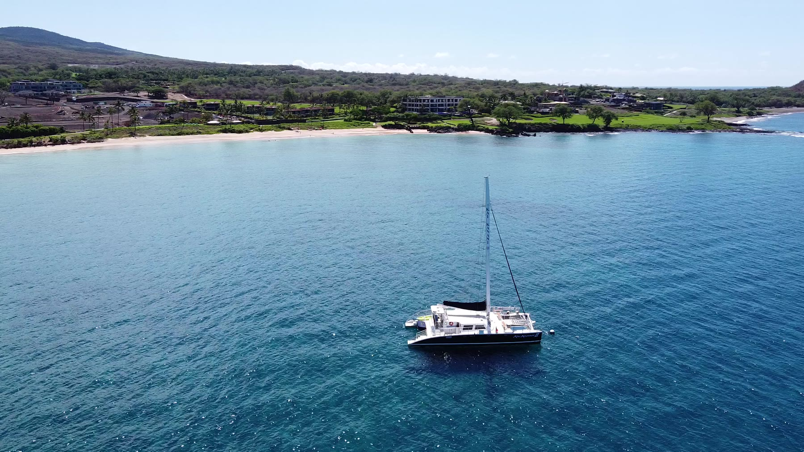

Maui Catamaran Tours: Choosing Your Day on the Water
Maui, with its crystal-clear waters and gentle ocean breezes, offers an idyllic setting for exploring the Pacific. Discover the top three catamaran tours that promise an unforgettable maritime adventure.
Sunrise calm, afternoon trade winds and sunset color each create a different kind of sail.

Our Pick: Kai Kanani from Maluaka Beach
For a South Maui catamaran experience, we recommend Kai Kanani. The Kai Kanani II is moored just off Maluaka Beach in Makena and loads directly from the beach, placing guests only a short sail from Molokini Crater without first driving to a harbor elsewhere on the island.
Maluaka is also one of the beaches we know most intimately. We photograph families, couples, elopements and weddings along this shoreline throughout the year. Beginning a sailing day from the same beach gives visitors another perspective on a part of South Maui that has shaped many of our favorite photographs.
Explore Kai Kanani's tours ↗

Sunset Sail along the West Maui Coast
For a romantic and serene experience, a sunset sail along the West Maui Coast is a must. As the sun dips below the horizon, casting a warm glow over the ocean, catamarans set sail for an evening of tranquility and breathtaking views. Many tours depart from Lahaina or Kaanapali, providing a front-row seat to the technicolor display of the Hawaiian sunset.
Some tours include complimentary drinks and appetizers, creating a perfect setting for couples or anyone seeking a peaceful escape from the hustle and bustle of everyday life. The gentle rocking of the catamaran and the sound of the waves create a serene ambiance, making it a magical experience to cherish.
What to know before your sail.
When is the best time of year for whale watching catamarans in Maui?
From December to April, the waters surrounding Maui become a stage for one of nature's most spectacular performances—the annual humpback whale migration. Catamaran tours during this period offer an unparalleled opportunity to witness these majestic creatures in their natural habitat with guidance from knowledgeable naturalists.
Where do most Maui catamaran tours depart from?
Many catamaran excursions depart from Maalaea Harbor or Kaanapali Beach. Our South Maui recommendation, Kai Kanani, is different: it beach-loads at Maluaka Beach in Makena, close to Wailea and only a short sail from Molokini.